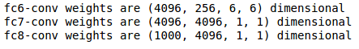

Net Surgery in Caffe
01 Jun 2016Note: Please download the IPython notebook from this link, check out README file for instructions before you go through the rest of the post.
Table of Contents:
Introduction
This is a hands on converting a Convolutional Neural Network (CNN) to Fully Convolution Network (FCN). Converting CNN to FCN is nothing but converting fully connected (FC) layers in CNN to convolution layers
Let's take the standard Caffe Reference ImageNet model CaffeNet and transform it into a fully convolutional net. The code is extracted and modified from the cafee net surgery example
Network architecture
Before converting FC layers to convolution layers, lets see the network architecture first. Figure 1 shows the architecture of CaffeNet.
(Open the image in new tab and zoom to see the details)
Python Code
Output
Execute the python code, output prints the layers in CaffeNet and dimensions of weights in each layer. Here for the sake of simplicity I have eliminated bias parameters. As you can see, it has 5 convolution layers (conv1, conv2, conv3, conv4, conv5) and three FC (fc6, fc7, fc8) layers
Lets understand the weight dimensions format in convolution and FC layers. Figure 2 is self explanatory.
Figure 2: Weight dimensions in Convolution and FC layers Now that we know the network architecture and the weight dimensions in each layer, our intension is to convert FC (fc6, fc7, fc8) layers to convolution layers
As explained in Figure 2, in dimensions of fc6 layer \((4096, 9216)\), \(9216\) indicates the number of outputs from convolution layer-5 after pooling. Lets just confirm that.
Figure 3: Output dimensions from convolution layer-5 after pooling Observe \(256 * 6 * 6\) = \(9216\), so in order to convert fc6 layer to convolution layer, we just need to use the convolution kernel of size 6. The respective prototxt file change is shown in Figure 4.
Figure 4: fc6 to convolution layer The rest of fully connected layers fc7, fc8 can be viewed as convolution layer with \(1\) x \(1\) kernel. The respective prototxt file change is shown in Figure 5.
Figure 5: fc7, fc8 to convolution layer Lets verify it now.
Python Code
Output
|  |
Weight transplant
Now that we converted the network architecture, lets transfer the weights from CNN to FCN and generate the classification map.
Python Code
Output
As you can see in the probability map values, the classifications include various cats -- 282 = tiger cat, 281 = tabby, 283 = persian.
So FCN can be used to extract dense feature maps. This enables us dense learning (eg. Image Semantic Segmenation).
That is it, we have converted CNN to FCN. It is easy isn't it?.